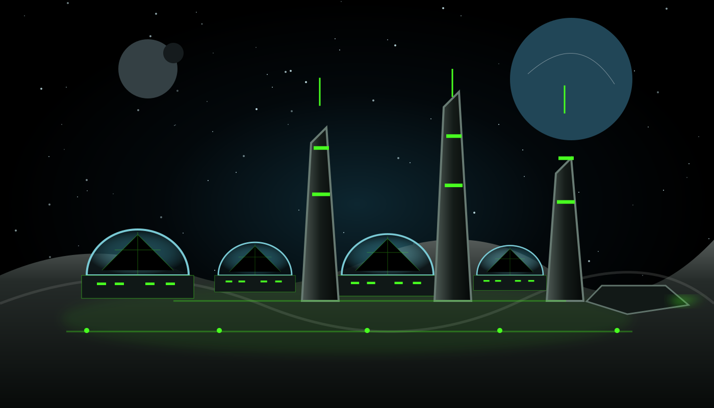

Human first
Technology that uplifts human potential and preserves agency.
Intelligence beyond limits.
De-Omega-Point designs and deploys human-value-centric intelligence and space technologies that solve real-world problems, increase human capability and build the infrastructure for a sustainable future among the stars.
Technology that uplifts human potential and preserves agency.
Intelligence built with integrity, consent and transparent governance.
Building intelligent infrastructure for life among the stars.
Solutions that regenerate our planet and extend beyond it.
Featured initiative
A multi-phase programme developing intelligent systems, software and operating frameworks for humanity’s expansion into space and the responsible use of space for the benefit of life on Earth.

Build, research, align and establish core systems and partnerships.
Build, test and validate products, pilots and measurable outcomes.
Expand, integrate and deploy technology through global collaboration.
Support larger missions, resilient infrastructure and space operations.
Sustain, evolve and leave durable capability for future generations.
Advanced intelligence that learns, adapts and operates with human oversight.
Quantum computing and secure communication for the next era.
Sustainable human-support systems for space and Earth.
Clean, abundant systems designed for a resilient future.
Partner with us. Invest in the future. Build a legacy.